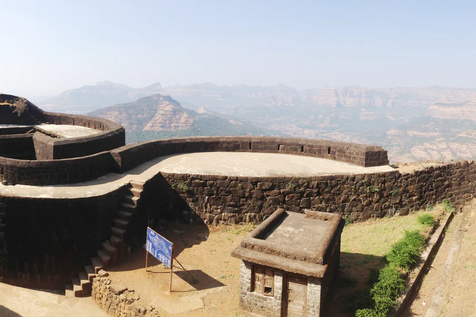
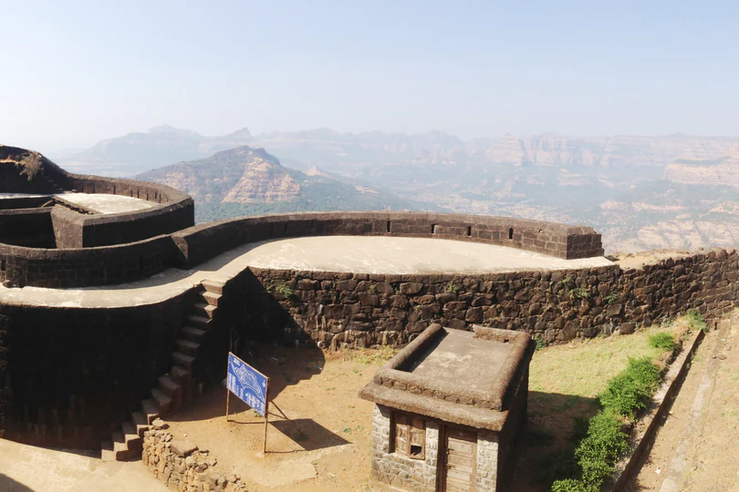

Raigad
Raigad Fort, Raigad Overview :
Soaring to a height of around 820 metres, the captivating Raigad Fort is perched on the Sahyadri mountain range in Mahad, Maharashtra. The majestic fort is accessible only from one side through a pathway which has about 1737 steps as deep valleys surround the other three sides. Alternatively, one can take the ropeway to reach the fort top in 4 minutes.
The fort is of great pride for the Marathas and is a reminder of the bravery and audacity. The Raigad fort is not just a tourist spot; it is a sacred place of pilgrimage which holds the imprints of the grand vision of Hindavi Swarajya as cherished by Chhatrapati Shivaji. While most of its parts are in ruins now, the fort still boasts of the brave history of Marathas.
After capturing the Raigad Fort, Chhatrapati Shivaji Maharaj renovated and named it as the capital of Maratha kingdom. The Britishers named it as the Gibraltar of the East as this well-fortified structure atop a hill had defied various attackers. It has several beguiling gates Nagarkhana Darwaja, Mena Darwaja, Maha Darwaja and Palkhi Darwaja. There was also a statue of Shivaji erected in front of the ruins of the main market avenue that eventually leads to his own Samadhi and that of his beloved dog.
History
This spectacular fort was built by Chandrarao Mores in 1030. It was known as the fort of Rairi and was seized by Chhatrapati Shivaji Maharaj in 1656 from the royal house of Chandrarao Mores, a junior or Cadet dynasty from the ancient Maurya Dynasty. The last More King was the feudatory of the Sultan of Bijapur. Shivaji renovated and expanded the fort of Rairi and then renamed it as Raigad which means the King's Fort. It was also considered as the capital of the Maratha kingdom.
Shivaji Maharaj also built fort Lingana near the Raigad Fort after capturing it. In 1689, Zulfikhar Khan captured Raigad and Aurangzeb renamed it as Islamgad. After this, the fort fell under Siddi Fathekan till 1733. In 1765, the fort became the target of the armed expedition by the British East India company. Finally, on 9 May 1818, it came under the rule of Britishers.
Gallary


 
